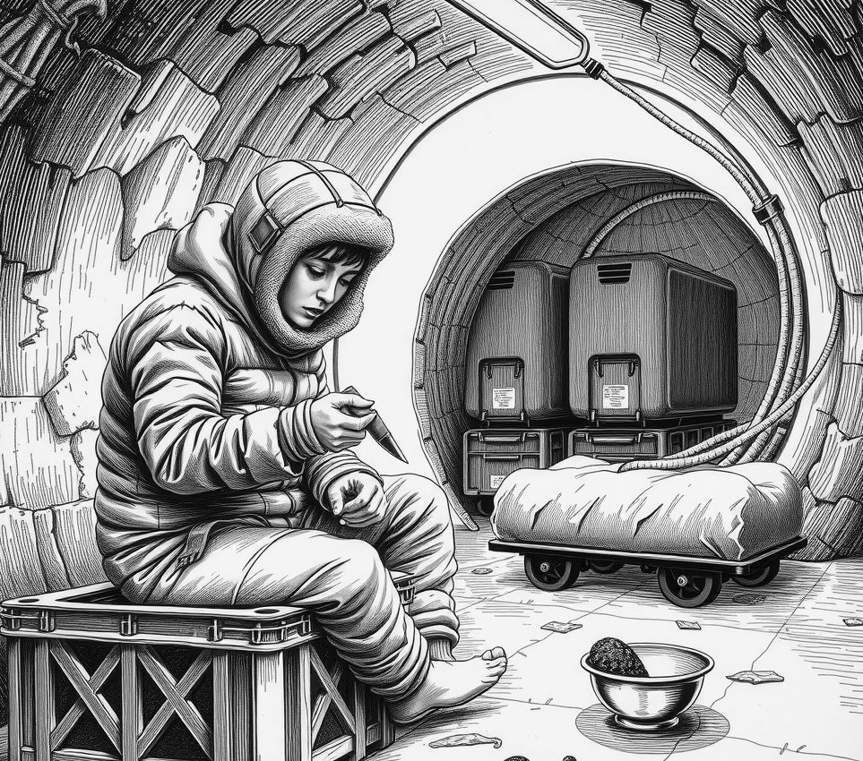

Deep-Ice Shaft Kanchenjunga-7 . 6 October 2175

Residents of Deep-Ice Shaft Kanchenjunga-7 blocked a public health team on Thursday to prevent the eradication of a gene-spore that grows edible black truffles under their toenails.
The emergency spray crew arrived with anti-fungal foggers after atmospheric sensors detected high spore counts across six residential levels. However, thirty vault residents barricaded the access hatch using cold-storage carts and small carving boards.
The fungal strain, originally engineered for automated mushroom trays, drifted into the shaft's air scrubbers in November. It replaces human toe-plates with firm, aromatic truffle caps every three weeks. While health officials classed the outbreak as a systemic skin rot, local dinner hostesses quickly integrated the harvests into regional soups.
By January, foot shaving became a key social ritual.
"The health board claims we are infected," said resident Tashi Lhadon, holding a small knife at the hatch. "In fact, we are self-sufficient."
Medical officers warned that the spore weakens bone density if left untreated. The shaft council responded by banning all anti-fungal soap from the central market.
"Sector C tried the medical cream," Lhadon said. "Their nails grew back normal. Nobody attended their parties."
They threw hot stock. The health team retreated.
A medical report notes that the spore will eventually turn the lower foot into a solid root mass. Council members expect this to double their starter yield by autumn.